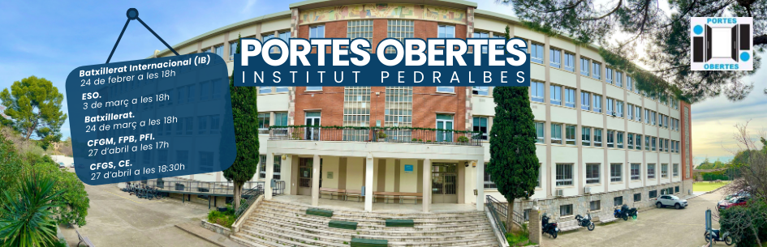

ESO (Educacio Secundaria Obligatoria)
Una etapa de quatre cursos que ofereix una formacio general i prepara l'alumnat per continuar els estudis.
Centre public d'ESO, Batxillerat i cicles formatius
L'Institut Pedralbes es un centre public de Barcelona, situat a l'avinguda d'Esplugues, al districte de les Corts. Va neixer de la fusio de dos instituts historics del barri: l'Institut Joan Bosca i l'Institut Ausias March.

Una etapa de quatre cursos que ofereix una formacio general i prepara l'alumnat per continuar els estudis.
Una etapa de dos cursos orientada a l'acces a la universitat i als cicles formatius de grau superior.
Cicles formatius que combinen coneixements teorics i practics per accedir al mon laboral.